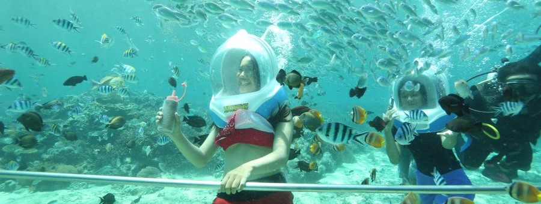

Underwater Walk
Restrictions Apply

At a depth of 10 feet, you will be able “walk” on the sea floor, among the fish with the aid of a peculiar yellow diving helmet which keeps your head dry while you take a stroll in the depths. You only need your swimsuit and protective reef shoes, nothing else. This excursion is open to anyone 6 years old and over. No need of any diving experience. The tour takes about 2 hours and the immersion lasts about 30 minutes. Pick up/Drop off included. Min. 2 people.